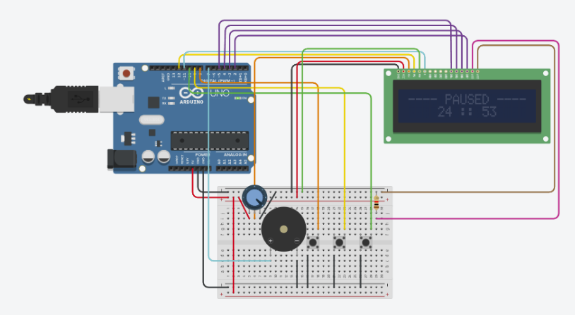
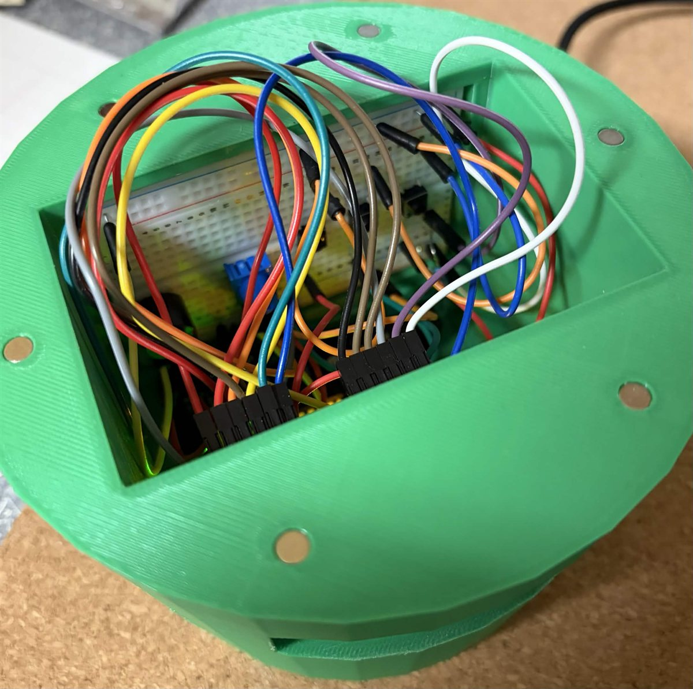
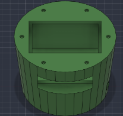
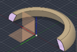
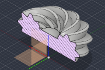
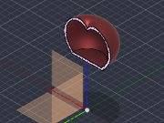

I study with the Pomodoro method: 25 minutes of focus, a 5 minute break, repeat. A phone timer always pulled me into my phone, so I built a dedicated one that sits on my desk: an Arduino with a small screen, four buttons and a buzzer, inside a 3D-printed cupcake.

It runs on its own from its buttons, and it can be controlled from a computer over USB. It has:
- an auto mode with the classic 25/5 split, asking whether to keep going after each cycle
- a custom mode where you pick the focus length, break length and number of cycles
- pause, resume and exit on any running timer
- a mute button that's remembered after a restart
- checkpoint and summary screens with how many sessions you've done and your total focus time
The circuit
The hardware is an Arduino Uno R3 driving a 16x2 character LCD, with a potentiometer for the screen's contrast, a piezo buzzer, and four push buttons: left, right, select and mute. I prototyped the whole circuit in Tinkercad before wiring anything for real.
Each button connects its pin straight to ground. The Arduino has pull-up resistors built in, so turning those on means a pin reads high normally and low when the button is pressed, with no extra resistors on the board.

Never waiting on delay()
The easy way to write a timer on an Arduino is to delay() for a second and count down. The problem is that the Arduino can't do anything else during a delay, so button presses get missed.
Instead, the firmware is a state machine. The timer is always in exactly one state, like the main menu, focus, break, paused or the summary screen. Every pass through the main loop reads any USB commands and buttons, checks the clock, moves to the next state if a phase has ended, and redraws the screen. Nothing ever blocks, so a press is handled the moment it happens.
Time comes from the Arduino's millisecond clock rather than from counting ticks. Pausing saves how many milliseconds were left, and resuming sets a new end time from that. Buttons are debounced over 30 ms so one press doesn't register as several, and the mute setting is saved to EEPROM, the Arduino's small bit of memory that survives power-off.
A cupcake case
I designed the case in Autodesk Fusion and 3D printed it in two pieces. The base holds the electronics and has cutouts for the screen and USB cable. The lid is the decorative part: a cake rim, a frosting swirl and a cherry on top.
Instead of screws, the halves are held together by magnets pressed into pockets around the rim, so it opens without tools whenever I need to get at the wiring.





Talking to a computer
I wanted to control the timer from my laptop too, so it speaks a simple text protocol over USB. Every message is one line. The computer sends commands like START 25 5 4 (25 minutes of focus, 5 of break, 4 cycles), PAUSE or EXIT, and the timer replies every second with a line describing everything about itself: its state, the time left, the cycle it's on and whether it's muted.
Because the whole state goes out every second, anything listening never has to keep track of the timer itself. If it misses a message, the next one fixes it. That's what my companion app, Pomegranate, uses to show the same countdown on my screen as on the LCD.
Testing it
Besides using it every day, I compiled it with the AVR toolchain and ran it in a simulator built from the same code, feeding it USB commands to hit every state change.
What's next
The next version turns the timer into a small wireless desk robot about the size of an action figure. A round touchscreen on an ESP32-S3 becomes its face and countdown ring, Bluetooth replaces the USB cable (using the same text protocol), and it runs on a battery with a vibration motor for silent alerts. I'm also designing a custom PCB in Altium to replace the loose wiring.
The timer is built with C++ on an Arduino Uno R3, with the case designed in Autodesk Fusion. I designed and built it solo.